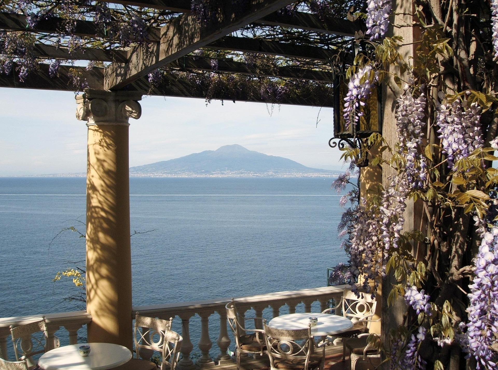
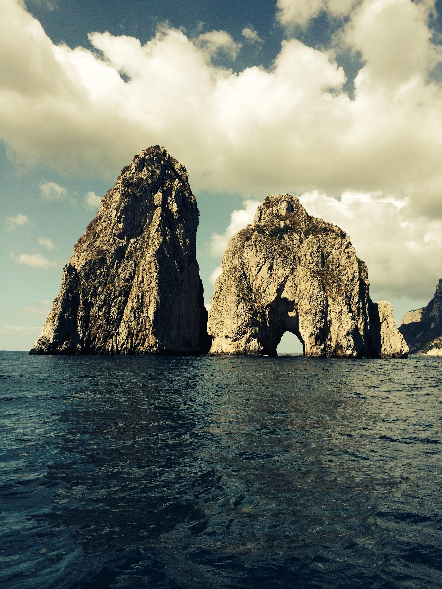
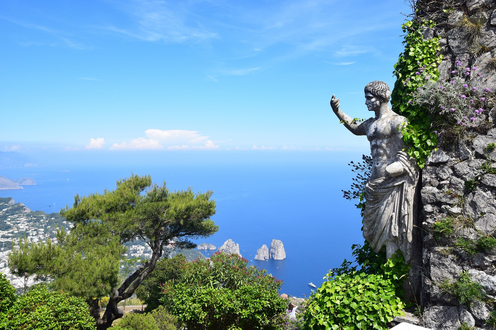
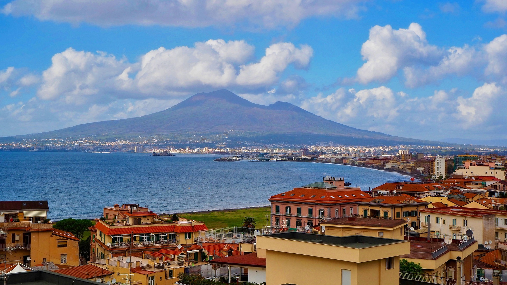
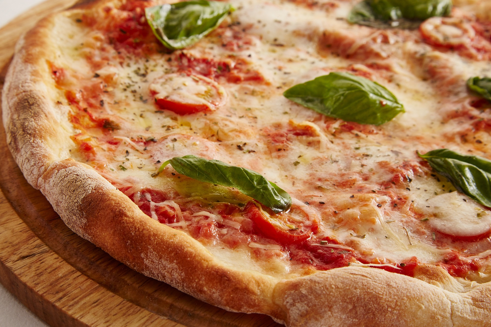
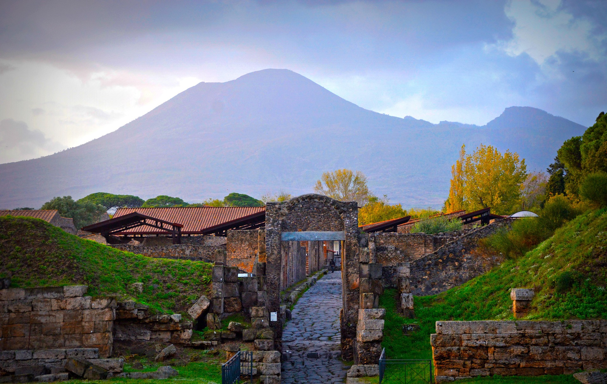
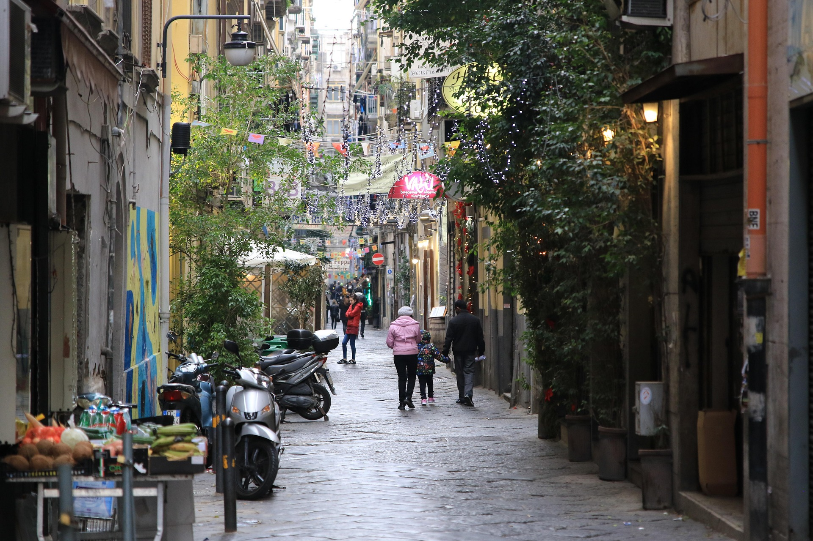

Marèzzo

Il sole arriva dal mare, non dalla strada.

Non c'è strada fino alla porta. È il motivo per cui è silenzioso.

Si mangia quello che c'è. Il menù si scrive la mattina.

Da qui il golfo si chiude come una parentesi.
Sei camere, una scogliera, nessun ascensore
Marèzzo sta a centoquattro gradini dalla strada, su un terrazzamento che prima era un limoneto. Ci si arriva a piedi con il bagaglio — oppure ci pensa Nicola con il carrello, se lo si avvisa la sera prima.
Non abbiamo una hall, una spa, né una carta dei cuscini. Abbiamo una cucina che lavora con quello che arriva la mattina, sei stanze che guardano tutte lo stesso mare da altezze diverse, e una terrazza dove alle otto non parla quasi nessuno.
Verifica le date →Le camere

Verifica disponibilità
Sei camere sole: in alta stagione si riempiono con settimane di anticipo. Le tariffe qui sotto sono dimostrative e non costituiscono un'offerta.